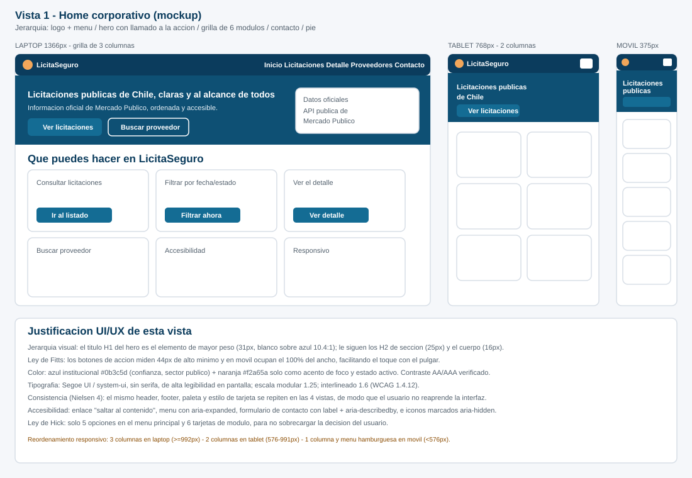
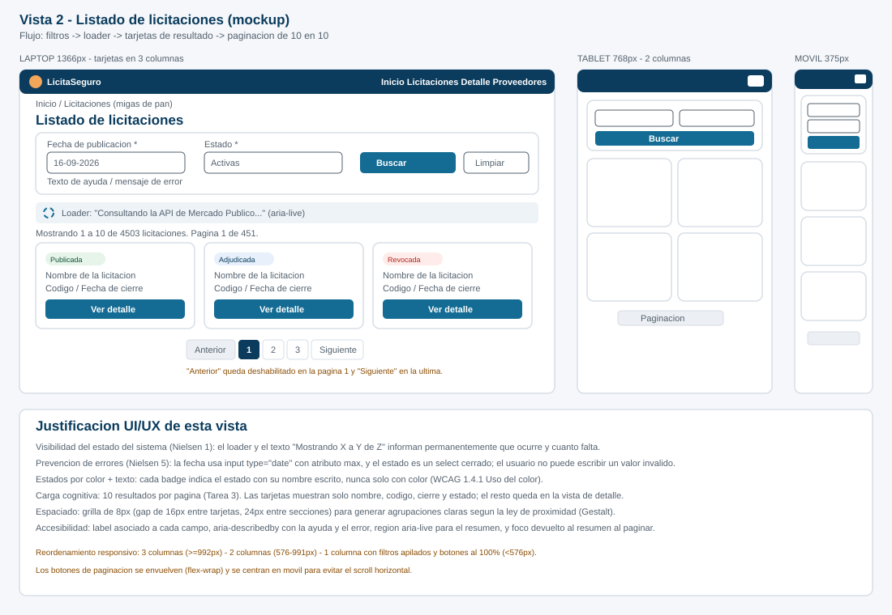
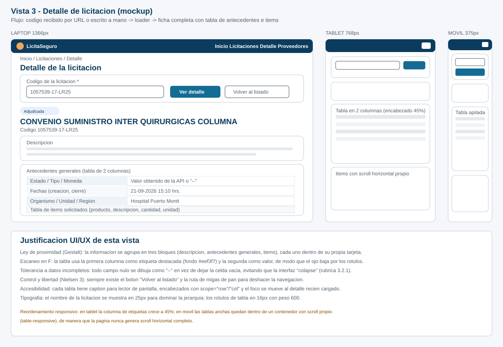
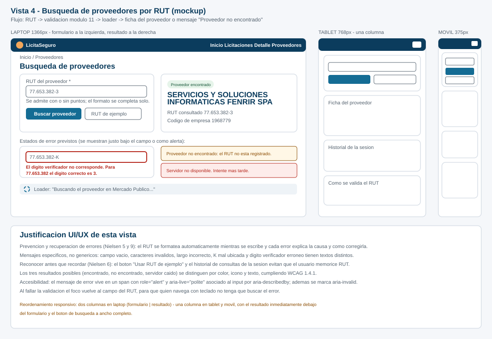
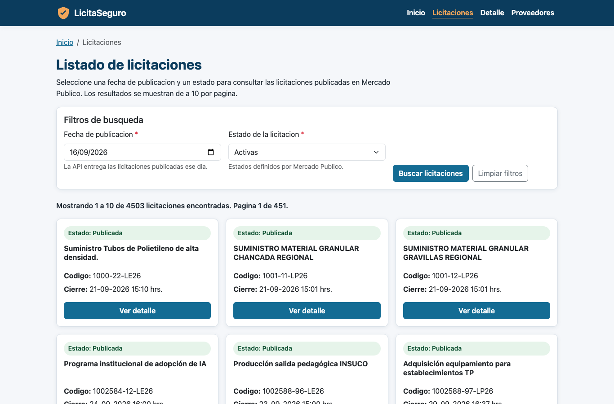
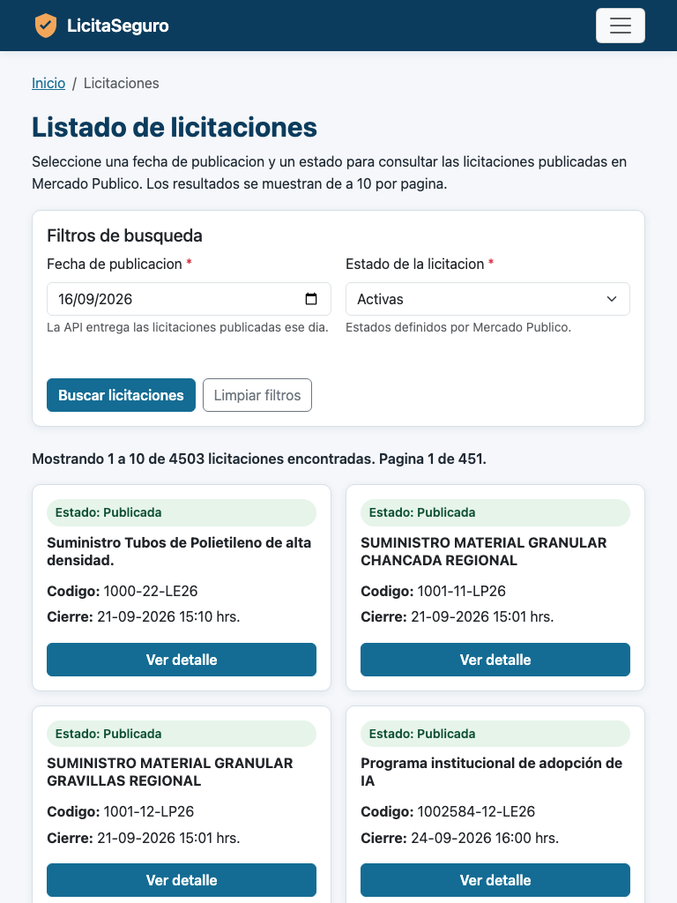
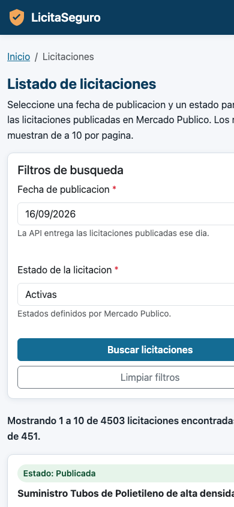
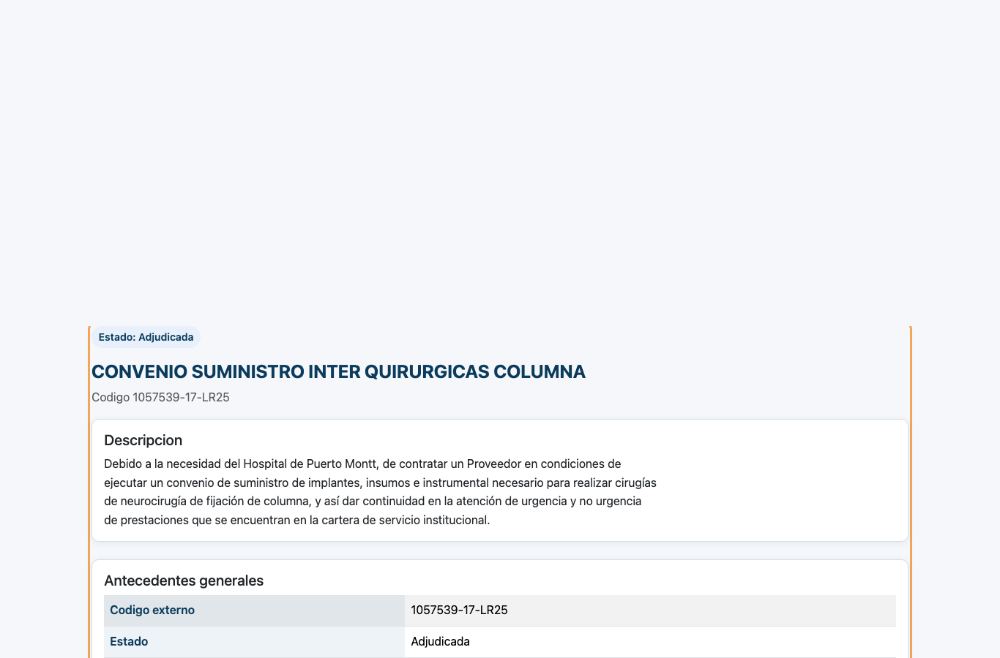
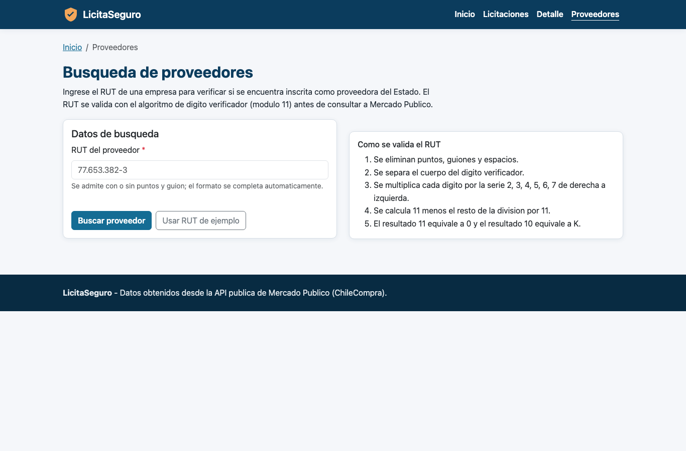

INSTITUTO PROFESIONAL / CENTRO DE FORMACION TECNICA
CARRERA TECNICO EN INFORMATICA
ASIGNATURA: DESARROLLO FRONTEND
Informe de documentacion del Examen Final
Sitio web publico para la consulta de licitaciones de Mercado Publico
| Estudiante: | Luis Orellana Cabrera |
| Docente: | _____________________________ |
| Fecha de entrega: | _____________________________ |
| Unidad: | Evaluacion 3 - Examen transversal |
| Modalidad: | Trabajo individual |
| Repositorio: | github.com/Luisorellanacabrera/licitaseguro-examen-frontend |
LicitaSeguro es una compañia chilena dedicada a entregar informacion transparente y accesible sobre licitaciones publicas. Hasta ahora, todas sus busquedas se realizan directamente en la plataforma de Mercado Publico, lo que obliga a sus ejecutivos a navegar un sistema pensado para compradores del Estado y no para la consulta rapida.
El presente informe documenta el desarrollo de un sitio web publico que resuelve esa necesidad. El portal permite consultar el listado de licitaciones, filtrarlo por fecha y estado, revisar el detalle de cada licitacion, buscar proveedores por RUT y contar con un homepage corporativo que articula los tres modulos. Toda la informacion se obtiene en linea desde la API publica de Mercado Publico; el sitio no almacena ni modifica datos.
Construir un sitio web frontend, responsivo y accesible, que consuma los endpoints publicos de Mercado Publico y presente la informacion de licitaciones y proveedores de forma clara para usuarios sin experiencia en compras publicas.
| Tecnologia | Version | Uso en el proyecto |
|---|---|---|
| HTML5 | - | Estructura semantica de las 4 vistas (header, nav, main, section, article, footer). |
| CSS3 | - | Hoja propia styles.css: variables de color, escala tipografica y media queries. |
| JavaScript | ES6+ | Puro (sin framework JS): modulos IIFE, async/await, fetch, AbortController. |
| Bootstrap | 5.3.3 (CDN) | Grilla responsiva, navbar colapsable, tarjetas, tablas y componente de paginacion. |
| API Mercado Publico | v1 | Fuente oficial de los datos de licitaciones y proveedores. |
Eval_U3A_Orellana/ |-- index.html Vista 1: homepage corporativo + formulario de contacto |-- licitaciones.html Vista 2: listado con filtros, loader y paginacion |-- detalle.html Vista 3: detalle de una licitacion |-- proveedores.html Vista 4: busqueda de proveedor por RUT |-- css/ | |-- styles.css Paleta, tipografia, componentes y media queries comentadas |-- js/ | |-- config.js Ticket, URLs de los endpoints, estados y constantes | |-- api.js Capa de acceso a la API: fetch, timeout, parseo y limpieza | |-- validaciones.js RUT (modulo 11), fecha, estado y codigo de licitacion | |-- ui.js Loader, alertas, errores por campo y paginacion accesible | |-- home.js Controlador del formulario de contacto | |-- licitaciones.js Controlador del listado | |-- detalle.js Controlador del detalle | |-- proveedores.js Controlador de la busqueda de proveedores |-- informe/ | |-- Informe_Examen_Frontend_LicitaSeguro.html (este documento) | |-- mockups/ 4 mockups en SVG | |-- capturas/ Capturas del sitio en funcionamiento |-- README.md Instrucciones de ejecucion y descripcion tecnica
La separacion en capas (configuracion, acceso a datos, validaciones, interfaz y
controlador de cada vista) evita repetir codigo: por ejemplo, la validacion del RUT se
escribe una sola vez en validaciones.js y se reutiliza tanto en la vista de
proveedores como en el formulario de contacto del homepage.
Se elaboraron cuatro mockups, uno por vista, cada uno dibujado en sus tres resoluciones
(laptop 1366px, tablet 768px y movil 375px) e incluyendo la justificacion de las
decisiones de diseño. Los archivos originales estan en informe/mockups/.
La paleta se construyo sobre un azul institucional que transmite confianza y seriedad,
asociado al sector publico, mas un naranja usado unicamente como color de acento (foco
del teclado y elemento activo del menu). Todas las combinaciones fueron verificadas con
el comprobador de contraste de WebAIM y documentadas como comentario en la cabecera de
css/styles.css.
| Uso | Color de texto | Color de fondo | Contraste | Nivel WCAG |
|---|---|---|---|---|
| Titulos | #0b3c5d | #ffffff | 10.4:1 | AAA |
| Barra de navegacion | #ffffff | #0b3c5d | 10.4:1 | AAA |
| Texto base | #1f2933 | #f5f7fa | 14.1:1 | AAA |
| Boton primario | #ffffff | #146c94 | 5.1:1 | AA |
| Mensaje de error | #b42318 | #ffffff | 6.1:1 | AA |
| Mensaje de exito | #0f5132 | #ffffff | 8.6:1 | AAA |
| Advertencia | #8a4b00 | #fff7e6 | 7.2:1 | AAA |
Ademas se cumple la pauta WCAG 1.4.1 (Uso del color): ningun estado se comunica solo con color. Los badges de estado de licitacion incluyen siempre la palabra ("Estado: Publicada", "Estado: Revocada") y las alertas incluyen icono y titulo.
Se utiliza la familia Segoe UI / system-ui, una tipografia sin serifa de alta
legibilidad en pantalla y disponible en el sistema operativo, lo que evita descargar
fuentes externas y mejora el rendimiento. La escala es modular con razon 1.25:
| Elemento | Tamaño | Peso | Justificacion |
|---|---|---|---|
| H1 (titulo de pagina) | 31px | 700 | Dominante en la jerarquia; unico H1 por vista. |
| H2 (seccion) | 25px | 700 | Divide los bloques de contenido. |
| H3 (tarjeta) | 20px | 700 | Titulo de cada licitacion o bloque. |
| Cuerpo | 16px | 400 | Minimo recomendado para lectura comoda. |
| Textos de ayuda | 14px | 400/600 | Informacion secundaria; nunca menor a 14px. |
Interlineado 1.6 (WCAG 1.4.12) y ancho de lectura limitado a 75 caracteres en los parrafos largos.
Todo el espaciado es multiplo de 8px (grilla de 8 puntos), lo que produce agrupaciones visuales consistentes segun la ley de proximidad de la Gestalt. Los elementos interactivos tienen al menos 44x44px de area tactil (WCAG 2.5.5).




| Heuristica | Aplicacion concreta en LicitaSeguro |
|---|---|
| 1. Visibilidad del estado del sistema | Loader con texto en cada consulta y resumen "Mostrando 1 a 10 de N licitaciones. Pagina X de Y". |
| 2. Correspondencia con el mundo real | Lenguaje del dominio de compras publicas: licitacion, organismo comprador, adjudicada, proveedor. |
| 3. Control y libertad del usuario | Boton "Limpiar filtros", "Volver al listado" y migas de pan en todas las vistas internas. |
| 4. Consistencia y estandares | Mismo header, footer, paleta, tarjetas y estilo de boton en las 4 vistas. |
| 5. Prevencion de errores | Fecha con input type="date" y atributo max; estado como select cerrado; RUT formateado mientras se escribe. |
| 6. Reconocer antes que recordar | Boton "Usar RUT de ejemplo", textos de ayuda bajo cada campo e historial de consultas de la sesion. |
| 7. Flexibilidad y eficiencia | El detalle acepta el codigo por URL (detalle.html?codigo=...), lo que permite compartir un enlace directo. |
| 8. Diseño estetico y minimalista | La tarjeta del listado muestra solo 4 datos; el resto se reserva para la vista de detalle. |
| 9. Reconocer y recuperarse de errores | Cada error explica la causa y la correccion ("el digito correcto es 3"), no solo "dato invalido". |
| 10. Ayuda y documentacion | Bloque "Como se valida el RUT" y seccion de compromiso de accesibilidad en el homepage. |
scrollWidth nunca supere a clientWidth (ausencia de scroll horizontal).
La estrategia utilizada es Mobile First: el diseño base, sin ninguna
media query, corresponde al telefono, y los puntos de quiebre agregan complejidad hacia
arriba. Se combinan las clases de grilla de Bootstrap 5
(col-12 col-md-6 col-lg-4) con media queries propias para los ajustes de
tipografia, espaciado y ancho de los botones. Cada media query esta comentada en
css/styles.css explicando el punto de quiebre, la justificacion y el
reordenamiento de contenido.
| Dispositivo | Punto de quiebre | Justificacion | Reordenamiento del contenido |
|---|---|---|---|
| Movil | < 576px | Ancho tipico de telefonos (320 a 575px). | Una columna; menu colapsado en hamburguesa; filtros apilados; botones al 100% del ancho (area tactil); escala tipografica reducida; paginacion centrada con salto de linea. |
| Tablet | 576px a 991.98px | iPad y tablets Android en vertical y horizontal. | Dos columnas de tarjetas; filtros en dos campos por fila; menu aun colapsado para priorizar el contenido; columna de etiquetas de la tabla al 45%. |
| Laptop | ≥ 992px | Notebooks desde 1366x768. | Tres columnas de tarjetas; menu desplegado en horizontal; filtros en una sola linea; ancho de lectura limitado a 75 caracteres. |



document.documentElement.scrollWidth es igual a
clientWidth (375 = 375), es decir, no existe desbordamiento ni scroll
horizontal en ninguna vista. Las tablas anchas del detalle se contienen dentro de un
div.table-responsive que desplaza solo la tabla, no la pagina.
Todos los formularios llevan el atributo novalidate: se desactiva la
validacion nativa del navegador para controlar desde JavaScript el momento, el idioma y
la ubicacion de cada mensaje. Los mensajes se escriben en un <span>
ubicado inmediatamente debajo del campo, asociado a el mediante
aria-describedby y con role="alert" para que el lector de
pantalla lo anuncie. Ademas, el campo recibe aria-invalid="true" y un borde
rojo, de modo que el error se percibe por tres canales distintos: texto, color y
semantica.
| Formulario | Campo | Caso | Mensaje mostrado |
|---|---|---|---|
| Filtros de licitaciones | Fecha | Vacia | Debe seleccionar una fecha de publicacion para filtrar. |
| Posterior a hoy | La fecha no puede ser posterior al dia de hoy. | ||
| Anterior a 2008 | Mercado Publico entrega informacion desde el año 2008 en adelante. | ||
| Estado | Sin seleccionar | Debe seleccionar un estado de licitacion. | |
| Detalle | Codigo | Vacio | Debe indicar el codigo de la licitacion. Ejemplo: 1057539-17-LR25 |
| Formato incorrecto | El codigo no cumple el formato de Mercado Publico. Ejemplo valido: 1057539-17-LR25 | ||
| Proveedores | RUT | Vacio | El RUT es obligatorio. Ejemplo: 77.653.382-3 |
| Caracteres invalidos | El RUT solo admite numeros, puntos, guion y la letra K. | ||
| Muy corto | El RUT esta incompleto: debe tener al menos 7 digitos mas el digito verificador. | ||
| K mal ubicada | La letra K solo puede usarse como digito verificador, al final del RUT. | ||
| DV incorrecto | El digito verificador no corresponde. Para 77.653.382 el digito correcto es 3. | ||
| Contacto (homepage) | Nombre | Vacio / menor a 3 | El nombre es obligatorio. / El nombre debe tener al menos 3 caracteres. |
| Con numeros | El nombre solo admite letras, espacios, guiones y apostrofes. | ||
| Correo | Sin arroba | El correo debe incluir el simbolo @. Ejemplo: nombre@empresa.cl | |
| Formato invalido | El formato del correo no es valido. Ejemplo: nombre@empresa.cl | ||
| Mensaje | Menor a 10 | El mensaje es muy corto: faltan N caracteres para el minimo de 10. | |
| Mayor a 300 | El mensaje supera el maximo de 300 caracteres (actualmente tiene N). |
El loader cumple un ciclo controlado en las tres vistas que consumen la API:
UI.mostrarLoader), se deshabilita el boton que la origino
(disabled + aria-disabled) y se bloquea la zona de
resultados con la clase .ls-blocked, que aplica
pointer-events:none.await sobre la funcion del modulo API.
// Extracto de js/licitaciones.js
UI.mostrarLoader(ID.loader, { bloquear: ID.resultados, boton: ID.boton });
const respuesta = await API.obtenerLicitaciones(resFecha.fechaApi, estadoSeleccionado);
UI.ocultarLoader(ID.loader, { bloquear: ID.resultados, boton: ID.boton });
El contenedor del loader declara role="status" y
aria-live="polite", por lo que el lector de pantalla anuncia "Consultando la
API de Mercado Publico..." sin interrumpir al usuario.
La API de listado devuelve la totalidad de licitaciones del dia consultado (por ejemplo,
4.503 registros). Como el requerimiento indica paginar cuando se superan los 10
elementos, la paginacion se resuelve en el cliente: el arreglo completo se guarda en el
estado de la vista y solo se renderiza el bloque correspondiente con
slice(). Caracteristicas implementadas:
ITEMS_POR_PAGINA = 10 definida en config.js.disabled + aria-disabled="true").aria-current="page".addEventListener delegado atiende todos los botones generados.
El RUT chileno se valida calculando su digito verificador. El procedimiento
implementado en js/validaciones.js es:
11 - (suma mod 11).
function calcularDigitoVerificador(cuerpo) {
let suma = 0, multiplicador = 2;
for (let i = cuerpo.length - 1; i >= 0; i--) {
suma += parseInt(cuerpo.charAt(i), 10) * multiplicador;
multiplicador = multiplicador === 7 ? 2 : multiplicador + 1;
}
const resto = 11 - (suma % 11);
if (resto === 11) return '0';
if (resto === 10) return 'K';
return String(resto);
}
El campo ademas se formatea automaticamente mientras se escribe
(77653382 pasa a 7.765.338-2), porque el endpoint de
proveedores exige el RUT con puntos y guion.
| N.° | Funcion | Endpoint | Vista |
|---|---|---|---|
| 1 | Listado de licitaciones | GET /servicios/v1/publico/licitaciones.json?fecha=ddmmaaaa&estado=nombre&ticket=cod |
licitaciones.html |
| 2 | Detalle de licitacion | GET /servicios/v1/publico/licitaciones.json?codigo=1057539-17-LR25&ticket=cod |
detalle.html |
| 3 | Datos de proveedor | GET /servicios/v1/Publico/Empresas/BuscarProveedor?rutempresaproveedor=77.653.382-3&ticket=cod |
proveedores.html |
El encadenamiento funciona tal como indica el documento de apoyo: del primer servicio se
obtiene el CodigoExterno, que se envia por la URL al segundo servicio para
obtener el detalle completo; el tercer servicio se consulta de forma independiente con el
RUT validado.


La consulta del RUT 77.653.382-3 devuelve {"Cantidad":1,"listaEmpresas":[{"CodigoEmpresa":"1968779","NombreEmpresa":"SERVICIOS Y SOLUCIONES INFORMATICAS FENRIR SPA"}]},
que el sitio presenta como una ficha con la razon social, el codigo de empresa y el RUT
consultado. Si listaEmpresas viene vacio se muestra el mensaje
"Proveedor no encontrado" indicando el RUT consultado.
| Requerimiento | Implementacion | Archivo / elemento |
|---|---|---|
Etiquetas label | Todos los input, select y textarea tienen su label asociado por for/id. Los campos obligatorios se marcan con asterisco y aria-required. | 4 vistas |
| Atributos ARIA | aria-label en el menu y los enlaces "Ver detalle"; aria-describedby uniendo campo, ayuda y error; aria-live en loaders, resumenes y alertas; aria-invalid en campos erroneos; aria-expanded y aria-controls en el boton hamburguesa; aria-current="page" en el enlace activo y la pagina actual de la paginacion. | 4 vistas |
| Navegacion por teclado | tabindex="0" en enlaces del menu, campos y botones para asegurar un orden de tabulacion explicito y coherente con el orden visual; tabindex="-1" en los contenedores que reciben foco por script (resumen de resultados, detalle cargado, ficha del proveedor). | 4 vistas |
| Enlace de salto | "Saltar al contenido principal" como primer elemento tabulable, visible solo al recibir foco (WCAG 2.4.1). | 4 vistas |
| Foco visible | Regla :focus-visible con contorno naranja de 3px y desplazamiento de 2px; nunca se usa outline:none sin reemplazo. | styles.css |
| Texto alternativo | El logotipo SVG declara role="img", <title> y aria-label; los iconos decorativos llevan aria-hidden="true" para no ensuciar la lectura. | 4 vistas |
| Estructura semantica | header, nav, main, section, article, aside y footer; un solo h1 por vista y jerarquia de encabezados sin saltos. | 4 vistas |
| Tablas accesibles | caption oculto visualmente pero leido por el lector, scope="row" y scope="col" en los encabezados. | detalle.js |
| Idioma y zoom | lang="es" en html; el viewport no bloquea el zoom (WCAG 1.4.4). | 4 vistas |
| Movimiento reducido | Media query prefers-reduced-motion que anula animaciones y transiciones. | styles.css |
| Manejo de foco | Al fallar una validacion el foco se lleva al primer campo con error; al cargar el detalle o la ficha del proveedor, el foco se mueve al resultado. | controladores |
| Seguridad del contenido | Toda la informacion de la API se escapa con UI.escapar() antes de insertarse en el DOM, evitando inyeccion de HTML. | ui.js |
La API entrega textos en mayusculas, con comillas tipograficas, dobles espacios y, en
algunos registros, tildes mal codificadas (efecto conocido como mojibake, del
tipo É, cuando un texto Latin-1 se interpreta como UTF-8). La funcion
API.limpiarTexto() corrige esos casos, normaliza comillas y espacios duros y
recorta los espacios sobrantes. La funcion API.valorSeguro() devuelve
"--" cuando el campo viene nulo o vacio, evitando celdas en blanco y que la
interfaz colapse ante respuestas incompletas.
| Escenario | Deteccion | Mensaje mostrado al usuario |
|---|---|---|
| Sin conexion / CORS / servidor caido | catch del fetch | Servidor no disponible o sin conexion a internet. No fue posible contactar a Mercado Publico. |
| Demora excesiva | AbortController a los 20 segundos | La consulta demoro demasiado y fue cancelada. Verifique su conexion e intente nuevamente. |
| HTTP 400 | respuesta.status | La consulta enviada no es valida. Revise la fecha y el estado seleccionados. |
| HTTP 401 / 403 | respuesta.status | Credencial (ticket) no autorizada. / Sin permisos para acceder a este recurso. |
| HTTP 404 | respuesta.status | No se encontro el recurso solicitado en Mercado Publico. |
| HTTP 429 | respuesta.status | Se alcanzo el limite de consultas por minuto. Espere unos segundos e intente nuevamente. |
| HTTP 500 / 502 / 503 / 504 | respuesta.status | Servidor no disponible o con problemas internos. Intente mas tarde. |
| Respuesta vacia | Texto de respuesta sin contenido | El servidor devolvio una respuesta vacia. Intente mas tarde. |
| JSON invalido (la API responde HTML) | try/catch sobre JSON.parse | La respuesta del servidor no tiene el formato esperado (JSON invalido). Intente mas tarde. |
| Listado sin resultados | Listado.length === 0 | No se encontraron licitaciones para la fecha y el estado seleccionados. |
| Detalle inexistente | Listado vacio en la respuesta | Error al cargar detalles de la licitacion. Intente mas tarde. |
| Proveedor inexistente | listaEmpresas.length === 0 | Proveedor no encontrado: el RUT no se encuentra registrado en Mercado Publico. |
| Campos nulos | valorSeguro() | Se muestra "--" en lugar de dejar el campo en blanco. |
En todos los casos el loader se oculta antes de mostrar el mensaje, el boton vuelve a
habilitarse y la alerta se escribe en un contenedor con aria-live="assertive"
para que sea anunciada de inmediato.
| N.° | Prueba | Resultado esperado | Resultado obtenido |
|---|---|---|---|
| 1 | Listado con fecha valida y estado "activas" | Tarjetas con datos reales y paginacion | Correcto: 4.503 licitaciones, 451 paginas, 10 por pagina |
| 2 | Fecha futura | Mensaje de error bajo el campo | Correcto: "La fecha no puede ser posterior al dia de hoy." |
| 3 | Estado sin seleccionar | Mensaje de error y foco en el select | Correcto |
| 4 | Detalle con codigo 1057539-17-LR25 | Ficha completa con estado "Adjudicada" | Correcto |
| 5 | Detalle con codigo mal formado | Mensaje de formato invalido, sin llamar a la API | Correcto |
| 6 | RUT 77.653.382-3 | Razon social del proveedor | Correcto: "SERVICIOS Y SOLUCIONES INFORMATICAS FENRIR SPA" |
| 7 | RUT 77.653.382-K | Mensaje indicando el digito correcto | Correcto |
| 8 | RUT valido pero no registrado | "Proveedor no encontrado" | Correcto |
| 9 | Navegacion completa con teclado | Foco visible y orden logico en las 4 vistas | Correcto |
| 10 | Resolucion 375px | Sin scroll horizontal | Correcto: scrollWidth = clientWidth = 375 |
| 11 | Consola del navegador | Sin errores de JavaScript | Correcto: 0 errores |
| 12 | Formulario de contacto vacio | Tres mensajes de error simultaneos | Correcto |
El proyecto es estatico, por lo que no requiere instalacion de dependencias. Sin embargo,
debe abrirse a traves de un servidor local (no con doble clic sobre el archivo), ya que
los navegadores bloquean las peticiones fetch originadas desde el protocolo
file://.
# Opcion 1: Python (incluido en macOS y Linux) cd Eval_U3A_Orellana python3 -m http.server 8080 # Abrir en el navegador: http://localhost:8080/index.html # Opcion 2: Visual Studio Code # Instalar la extension "Live Server" y presionar "Go Live" sobre index.html
El ticket de la API viene configurado en js/config.js y corresponde al
entregado en el documento de apoyo de la evaluacion. Si se agota su cuota de consultas,
basta con reemplazar el valor de la constante TICKET.
| Minuto | Contenido a mostrar |
|---|---|
| 00:00 - 00:45 | Presentacion personal, del caso LicitaSeguro y de los modulos construidos. |
| 00:45 - 02:00 | Recorrido del homepage: hero, grilla de modulos, seccion de accesibilidad y formulario de contacto validado (mostrar los errores). |
| 02:00 - 04:00 | Listado: filtrar por fecha y estado, mostrar el loader, el resumen, las tarjetas y la paginacion (incluyendo el boton deshabilitado en la primera pagina). |
| 04:00 - 05:00 | Errores del listado: fecha futura, estado sin seleccionar y busqueda sin resultados. |
| 05:00 - 06:30 | Detalle: entrar desde "Ver detalle", explicar el encadenamiento de endpoints y mostrar los campos con "--". |
| 06:30 - 08:00 | Proveedores: RUT valido, RUT con digito verificador erroneo, RUT no registrado y formateo automatico. |
| 08:00 - 09:00 | Responsividad: cambiar a tablet y movil con el inspector del navegador. |
| 09:00 - 10:00 | Accesibilidad: recorrido completo con la tecla Tab, enlace de salto y foco visible. Cierre y conclusiones. |
| Indicador | Evidencia en el proyecto | Ubicacion |
|---|---|---|
| 1.1.2 Principios y estandares UI/UX | 4 mockups detallados en tres resoluciones, justificacion de colores con ratios de contraste, tipografia, espaciado, heuristicas de Nielsen y proceso de validacion interna. | Seccion 5 e informe/mockups/ |
| 1.2.3 Interfaces responsivas | Mobile First con tres puntos de quiebre justificados y comentados; verificacion de ausencia de scroll horizontal. | Seccion 6 y css/styles.css |
| 2.1.1 Interactividad y eventos | Filtros por fecha y estado, loader que bloquea la interaccion, paginacion con botones deshabilitados en los extremos, JavaScript modular y comentado. | Seccion 7 y js/licitaciones.js |
| 2.1.2 Validacion de datos | Validacion de RUT (modulo 11), fecha, estado, codigo, nombre, correo y mensaje, con textos distintos por caso ubicados bajo cada campo. | Secciones 7 y 8, js/validaciones.js |
| 3.1.3 Accesibilidad y usabilidad | Label en todos los campos, ARIA extensivo, navegacion por teclado con tabindex, manejo de foco, alt descriptivo y contrastes verificados y comentados. | Seccion 9 |
| 3.2.1 Consumo de endpoints | Los 3 endpoints consumidos, parseo robusto del JSON, control de codigos HTTP, campos nulos como "--" y mensajes contextualizados por escenario. | Secciones 8 y 10, js/api.js |
| Paquete de entrega | Codigo fuente ordenado por capas, informe con formato de instituto y guion del video explicativo. | Carpeta raiz del proyecto |
El desarrollo permitio comprobar que es posible construir una aplicacion frontend util y de mediana complejidad utilizando solo HTML, CSS, JavaScript y un framework CSS, sin necesidad de un framework JavaScript. La organizacion del codigo en capas (configuracion, acceso a datos, validaciones, interfaz y controladores) fue determinante: permitio reutilizar la validacion del RUT y el manejo del loader en varias vistas, y concentrar en un solo archivo todo el control de errores de la API.
La principal dificultad tecnica fue la naturaleza de los datos entregados por Mercado Publico: campos nulos, textos en mayusculas y caracteres especiales mal codificados. Ello obligo a construir una capa de normalizacion previa al renderizado, lo que confirma que consumir un endpoint no se agota en obtener la respuesta, sino en validarla y presentarla de forma confiable.
En cuanto a accesibilidad, quedo claro que no se trata de un agregado final sino de una decision de diseño temprana: el contraste, la jerarquia de encabezados, el orden de tabulacion y el manejo del foco se definieron desde el mockup, lo que evito tener que rehacer la interfaz al final del proyecto.